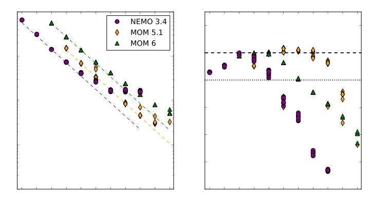
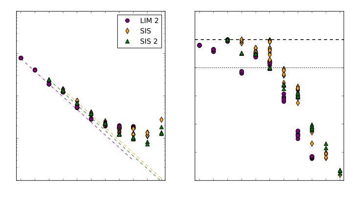
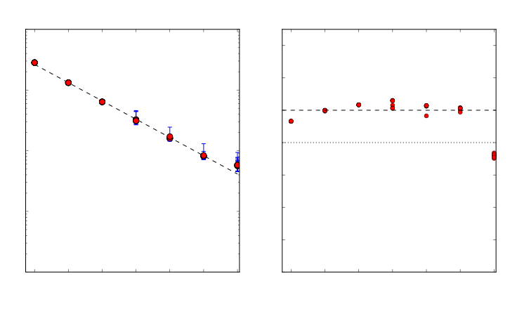

Scalability of MOM 5, NEMO, and MOM 6 on NCI's Raijin supercomputer
Marshall Ward
National Computational Infrastructure

Atmospheric scales
Atmospheric scales

Ocean scales

Length scale of the ocean

(Hallberg 2013)
0.1° is a minimum for Southern Ocean dynamics
Ocean modelling at NCI
| Model | Resolution | Grid | CPUs |
|---|---|---|---|
| ACCESS-CM (climate) | 1° | 360 x 300 | 40 |
| 0.25° | 1440 x 1080 | 960 | |
| OFAM (forecast) | 0.1° to 2° | 1191 x 968 | 384 |
| 0.1° | 3600 x 1500 | 512 | |
| ARCCSS (GFDL) (dynamics) | 0.25° | 1440 x 1080 | 960 |
| 0.1° | 3600 x 2700 | 9196 |
Ocean Models
MOM 5, NEMO
- Bryan-Cox models
(Video: Hogg et al. 2015)
MOM 6
- Isopycnal (layered) dynamics
- Arbitrary Lagrangian-Eulerian
- Horizontal C-grid
- Union of GOLD and MOM 5
- New SIS2 sea ice model
(Video: Morrison et al. 2013)
Tile decomposition


- Load-balanced using equal tiles, land-masked arrays
- Unbalanced message sizes (esp. diagonals)
- Land-only tiles removed in operational models
Split timestepping
Ocean stratification yields fast and slow dynamics: $$\begin{align} \mathbf{u} &= \left\{ \frac{1}{H} \int_{-H}^\eta \mathbf{u} \right\} + \left\{ \mathbf{u} - \frac{1}{H} \int_{-H}^\eta \mathbf{u} \right\} \\ &= \mathbf{U} + \mathbf{u}' \end{align}$$
- Depth-averaged variability is ~100x faster
- Accuracy is less important; uses simpler solvers
- Additional filtering required
Generalised orthogonal coordinates

(Murray 1996)
Tripolar grids eliminate the "pole problem"
Model configurations
| Model | Config | Resolution | Timestep |
|---|---|---|---|
| MOM 5.1 | "CM2.5" | 1440 x 108050 level | 1800 s (22.5 s split) |
| NEMO 3.4 | ORCA 0.25° | 1442 x 1021 46 level |
1440 s (24 s split) |
| MOM 6 | OM4 | 1440 x 1080 75 layer |
1200 s (~20 s split) |
- Serial ocean-ice coupling
- 10-day runtime
- No model output
NCI Platform: Raijin (雷神)

- 57,472 cores (3592 nodes, 16 core / node)
- Intel Xeon (Sandy Bridge), 3 GHz (turbo)
- 32+ GiB per node
- 56 Gb/s Infiniband network
- Two-level switched fabric fat tree
- $R_\text{max}$ = 0.978 PFlops (TOP500: #52)
Ocean runtime
Sea ice runtime
Initialisation

MPI Initialisation

1-year simulation times
| Model | CPUs | CPU Hrs | Time (s) | yr/day |
|---|---|---|---|---|
| MOM 5 | 960 | 1868.0 | 7088.2 | 12.1 |
| 1920 | 2126.3 | 3986.8 | 21.7 | |
| NEMO | 480 | 1068.0 | 8043.6 | 10.7 |
| 1920 | 1964.2 | 3753.6 | 23.0 | |
| MOM 6 | 480 | 3910.1 | 29363.1 | 2.9 |
| 960 | 4458.6 | 16756.5 | 5.2 | |
| 1920 | 5154.6 | 9718.3 | 8.9 | |
| 3840 | 6349.0 | 6057.2 | 14.3 |
1 year, MOM 5 vs NEMO
| Model | CPUs | CPU Hrs | Time (s) | yr/day |
|---|---|---|---|---|
| MOM | 480 | 1832.4 | 13783.9 | 12.1 |
| 960 | 1868.0 | 7088.2 | 12.1 | |
| 1920 | 2126.3 | 3986.8 | 21.7 | |
| 3840 | 4075.2 | 3995.6 | 21.6 | |
| NEMO | 480 | 1068.0 | 8043.6 | 10.7 |
| 960 | 1368.8 | 5132.9 | 16.8 | |
| 1920 | 1964.2 | 3753.6 | 23.0 | |
| 3840 | 3547.8 | 3413.9 | 25.3 |
1 year, MOM 5 vs MOM 6
| Model | CPUs | CPU Hrs | Time (s) | yr/day |
|---|---|---|---|---|
| MOM | 480 | 1832.4 | 13783.9 | 12.1 |
| 960 | 1868.0 | 7088.2 | 12.1 | |
| 1920 | 2126.3 | 3986.8 | 21.7 | |
| 3840 | 4075.2 | 3995.6 | 21.6 | |
| MOM 6 | 480 | 3910.1 | 29363.1 | 2.9 |
| 960 | 4458.6 | 16756.5 | 5.2 | |
| 1920 | 5154.6 | 9718.3 | 8.9 | |
| 3840 | 6349.0 | 6057.2 | 14.3 |
Model runtime observations
- NEMO
- Lowest complexity (2.4 CPU hours / day)
- Lowest memory usage (~50 GiB at 15 cores)
- Drastic efficiency loss after 960 CPUs
- MOM 5
- Moderate complexity (4.9 CPU hours / day)
- Strong scaling up to 3840 CPUs
- MOM 6
- Highest complexity (10.7 CPU hours / day, 75 levels)
- Moderate efficiency loss after 240 CPUs
Model runtime observations
- Sea Ice
- Scaling is comparable across models
- Efficiency drop after 960 CPUs
- Initialization
- All models show higher initialization times with CPU size
- MPI initialization is a strong factor
Subroutine analysis
MOM 5 subroutines

NEMO subroutines

MOM 6 subroutines
Subroutine comparison
- Poor scaling of MOM 5, NEMO free surface dynamics
update_ocean_barotropicocean_eta_smoothdyn_spg
- MOM 5, NEMO tracer advection is expensive
update_ocean_tracertra_adv
- MOM 6 communication is expensive
do_group_pass
Free surface dynamics
MOM 5: Barotropic solver

MOM 5: Free surface smoothing

NEMO: Surface pressure gradient

MOM 6: Barotropic timestep

Barotropic scaling
- MOM 5
- Predictor Corrector Euler timestep
- Scaling constrained to 960 cores
- Further constrained by biharmonic filter (B-grid)
- NEMO
- Elliptic conjugate gradient solver
- Severe scaling constraint at 240 CPUs
- MOM 6
- Predictor-corrector Euler timestep
- Strong scaling within
btstep - Communication unmeasured (
do_group_pass)
Tracer advection
MOM 5: Tracer advection
NEMO: Tracer advection

MOM 6: Tracer advection

Tracer advection scaling
- MOM 5
- MDPPM finite volume
- Very strong scaling, at least 3840 CPUs
- NEMO
- TVD finite volume
- Inefficient scaling after 240 CPUs
- MOM 6
- 3rd order Huynh PPM
- Poor scaling, esp. after 240 CPUs
- Communication unmeasured
Vertical physics
MOM 5: Vertical mixing coefficient
NEMO: Vertical mixing coefficient (TKE)
NEMO: Tracer relaxation

MOM 6: Diabatic physics
Vertical physics summary
- Vertical processes scale well due to horizontal tiling and low communication requirements
- NEMO tracer relaxation strongly constrains scalability, due to interpolation communication
MOM 5 vectorisation
| Subroutine | FLOP/CPU | % vector |
|---|---|---|
| MAIN | 2.04e+10 | 0.881 |
| update_ocean_model | 1.87e+10 | 0.91 |
| update_ocean_tracer | 8.40e+09 | 0.929 |
| vert_mix_coeff | 2.04e+09 | 0.809 |
| ocean_explicit_accel_a | 1.95e+09 | 0.928 |
| update_ocean_barotropic | 1.80e+09 | 0.945 |
| ocean_eta_smooth | 1.78e+07 | 0.875 |
| update_ice_model_slow_dn | 7.48e+08 | 0.832 |
NEMO 3.4 vectorisation
| Subroutine | FLOP/CPU | % vector |
|---|---|---|
| stp | 1.32e+10 | 0.55 |
| dyn_spg | 1.85e+09 | 0.96 |
| tra_adv | 1.31e+09 | 0.601 |
| tra_dmp | 4.18e+07 | 0.934 |
| ldf_slp | 7.47e+08 | 0.375 |
| sbc | 3.90e+09 | 0.0621 |
| sbc_ice_lim_2 | 3.80e+09 | 0.0435 |
| lim_dyn_2 | 3.61e+09 | 0.0134 |
MOM 6 vectorisation
| Subroutine | FLOP/CPU | % vector |
|---|---|---|
| MAIN | 5.20e+10 | 0.653 |
| update_ocean_model | 5.00e+10 | 0.657 |
| step_mom_dyn_split_rk2 | 3.80e+10 | 0.677 |
| ale_main | 9.85e+07 | 0.598 |
| diabatic | 3.54e+09 | 0.476 |
| mixedlayer_restrat | 1.83e+09 | 0.569 |
| advect_tracer | 1.17e+09 | 0.892 |
| update_ice_model_slow_dn | 1.08e+09 | 0.769 |
MOM 6 dynamics vectorisation
| Subroutine | FLOPs | % vector |
|---|---|---|
| step_mom_dyn_split_rk2 | 3.80e+10 | 0.677 |
| btstep | 4.35e+09 | 0.638 |
| do_group_pass | 2.40e+03 | 0.0 |
| continuity | 1.51e+07 | 0.874 |
| set_dtbt | 5.07e+04 | 0.248 |
| pressureforce | 1.55e+10 | 0.795 |
| set_viscous_bbl | 2.23e+08 | 0.49 |
MOM 5 vectorisation impact
| Section | Aligned AVX | Unaligned AVX | Serial |
|---|---|---|---|
| Ocean core | 166.7 s | 165.4 s | 179.2 s |
| Tracer update | 37.5 s | 37.2 s | 43.5 s |
| MDPPM | 25.2 s | 25.1 s | 31.4 s |
| Vert. mix | 24.9 s | 24.9 s | 26.5 s |
| Bih. frict. | 16.1 s | 16.0 s | 16.7 s |
Performance is likely bound by RAM speed
High resolution performance
(Stewart et al. 2016)
MOM 5, 0.1° scaling

MOM 5, 0.1° subroutines

Summary
- MOM 5, OM 2.5
- Strong scalability
- High vectorisation (~90%), but memory-bounded
- Significant barotropic scaling limit
- NEMO, ORCA 0.25°
- Fastest serial computation
- Lowest memory usage
- Severe barotropic scaling constraint
- MOM 6, OM 4
- Moderate efficiency loss after 960 CPUs
- Moderate vectorisation (~65%)